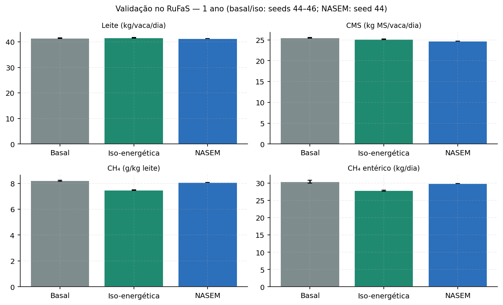
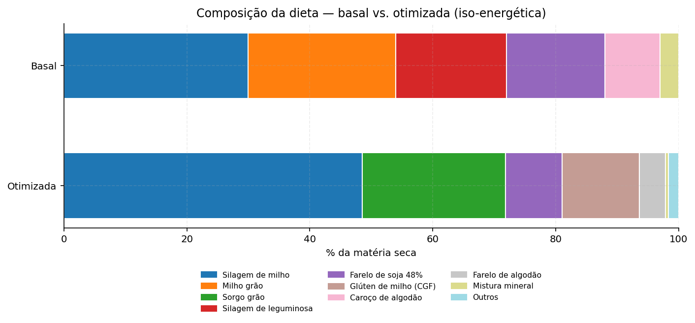
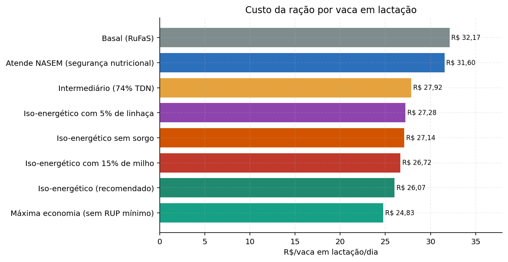
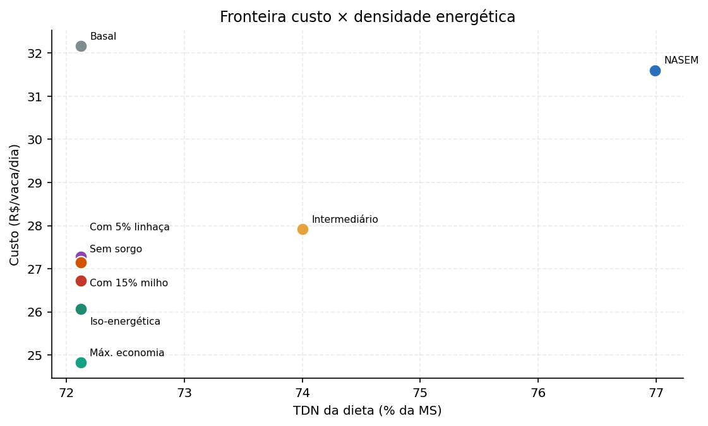
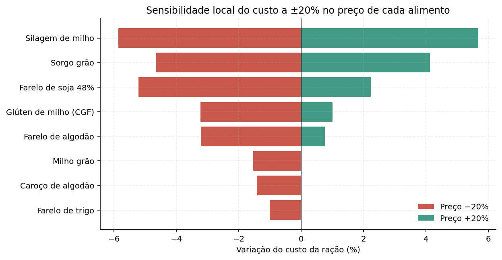
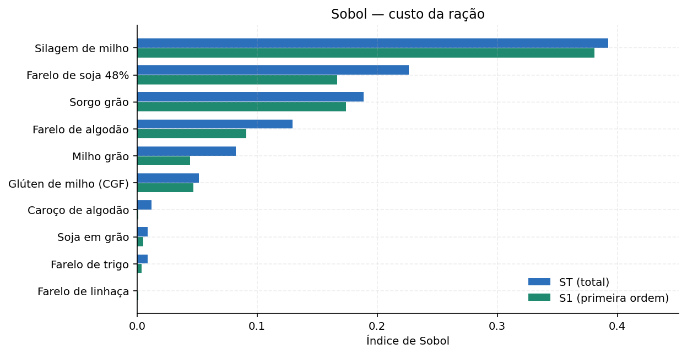
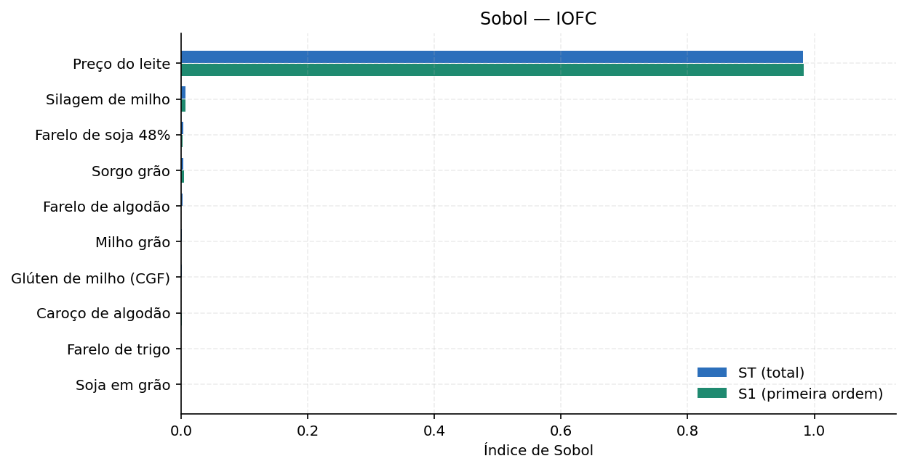
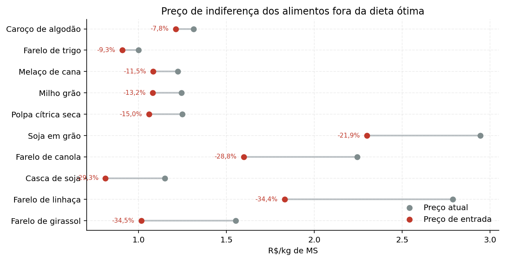

Otimização da dieta e efeito econômico — Fazenda Campo Dourado (GO)
Data: 2026-10-27
Autor: Análise integrada ao RuFaS
Fazenda: Fazenda Campo Dourado (GO)
Modelo: RuFaS 1.0.5 + módulo de otimização linear
1. Resumo executivo
Este trabalho desenvolve um módulo de programação linear (PL) acoplado aos arquivos de entrada e saída do RuFaS para formular a dieta da vaca em lactação da Fazenda Campo Dourado (GO) ao mínimo custo, com avaliação do efeito econômico, análise de sensibilidade local e global (Sobol) e validação biológica no simulador.
Resultado principal. A dieta iso-energética (mesmo aporte de energia, proteína e fibra da dieta basal) custa R$ 26,07/vaca/dia, contra R$ 32,17/vaca/dia da dieta basal avaliada com os mesmos preços de GO. Isso representa economia de R$ 6,10/vaca/dia (19,0%) e R$ 197.199,00/ano para as 88,56 vacas em lactação. A margem sobre o custo da ração (IOFC) sobe 7,0%.
Dieta recomendada (iso-energética): Silagem de milho 48,6%, Sorgo grão 23,2%, Glúten de milho (CGF) 12,6%, Farelo de soja 48% 9,2%, Farelo de algodão 4,3%, completando com minerais e ureia. A formulação substitui parte do milho e do farelo de soja por sorgo, glúten de milho e farelo de algodão, além de trocar a mistura mineral de 3% por calcário + mistura mineral em nível menor.
Custo de segurança nutricional. Se a fazenda quiser corrigir o déficit teórico de energia da dieta basal e atender à exigência NASEM (TDN 76,99% da MS), o custo sobe para R$ 31,60/vaca/dia — ainda 1,8% abaixo da basal, mas com economia muito menor. O cenário iso-energético é o de maior retorno econômico; o cenário NASEM é o mais conservador.
Decomposição da economia. Cerca de 60,7% da economia vêm da substituição de fontes minerais caras (3% de mistura mineral) por calcário e por fósforo de alimentos como farelo de algodão e glúten de milho; os outros 39,3% vêm da reformulação dos demais ingredientes. Esse ponto é importante: parte do ganho é correção de uma fórmula mineral possivelmente superdimensionada no cenário basal, não só “troca de milho por sorgo”. A decomposição é contábil: parte do fósforo foi transferida para farelo de algodão e glúten de milho, cujo custo aparece nas outras linhas; o ganho líquido é a diferença total.
Sensibilidade. O custo da ração é dominado pelo preço da silagem de milho (ST ≈ 0,39), seguido por farelo de soja (ST ≈ 0,23) e sorgo (ST ≈ 0,19). Na margem (IOFC), o preço do leite domina (ST ≈ 0,98); os preços dos alimentos têm efeito pequeno. O milho grão só entra na dieta se cair cerca de 13,2%; o farelo de linhaça, se cair cerca de 34,4%.
Na validação de 1 ano no RuFaS (seeds 44–46), a produção de leite do lote ficou em 3.720 kg/dia com a dieta otimizada contra 3.707 kg/dia da basal; o CMS caiu 1,2% e a intensidade de metano entérico caiu 8,8%.
Leitura crítica: o módulo é uma aproximação linear do modelo NASEM. Ele não substitui o RuFaS; serve para explorar o espaço de formulação, gerar hipóteses e orientar negociação de preços. A decisão final deve ser validada com o simulador completo (full_farm), com a dieta real da fazenda e com acompanhamento de consumo, leite, escore corporal e saúde ruminal.
2. Contexto e problema
O RuFaS é um simulador whole-farm de fazendas leiteiras. O cenário GO_campo_dourado representa uma fazenda de 100 vacas Holstein em Goiás, com 88,6 vacas em lactação em média, produção de 41,3 kg de leite/vaca/dia e consumo de 25,3 kg de MS/vaca/dia. A dieta basal do RuFaS é definida no arquivo feed.json e inclui silagem de milho, silagem de leguminosa, milho grão, farelo de soja, caroço de algodão e mistura mineral.
O problema de pesquisa operacional é:
Dado um lote de vacas com exigências nutricionais conhecidas, um conjunto de alimentos com composição e preço, e limites práticos de inclusão, qual mistura de alimentos atende às exigências ao menor custo? Como o custo e a composição ótima reagem a mudanças de preço? A dieta ótima mantém a produção quando simulada no RuFaS?
O escopo é a ração da vaca em lactação (pen LAC_COW_PEN_3), não o rebanho total. Bezerras, novilhas e vacas secas têm outras dietas e não são otimizadas aqui. O custo é o da ração no cocho, sem armazenamento, perdas, mistura, mão de obra ou capital.
Dados de preço. Preços de milho, soja e leite vêm do CEPEA (27/10/2026 para grãos; leite GO de ago/2026). Farelo de soja em Anápolis/GO vem da Agrolink (27/10/2026). Subprodutos sem indicador público usam cotação regional ou estimativa declarada. O câmbio usado para converter os preços do RuFaS é R$ 5,35/US$ (Notícias Agrícolas, 27/10/2026).
Hipótese central. A dieta basal foi formulada com preços e ingredientes do exemplo do RuFaS (Nordeste dos EUA). Ao reavaliar a mesma dieta com preços de Goiás e permitir outros ingredientes, existe espaço para reduzir custo sem piorar o aporte nutricional.
3. Dados e método
3.1 Exigências nutricionais
As exigências foram calculadas com o próprio calculador NASEM do RuFaS para uma vaca de 650 kg, 150 dias em lactação, 41,3 kg de leite/dia, 4,0% de gordura e 3,2% de proteína:
| Indicador | Valor |
|---|---|
| Consumo de MS (DMI) | 25,30 kg/dia |
| Energia líquida de lactação (NEl) | 44,69 Mcal/dia |
| Proteína metabolizável (PM) | 2.557 g/dia |
| Cálcio absorvível | 66,8 g/dia |
| Fósforo absorvível | 64,1 g/dia |
| TDN mínimo equivalente | 76,99% da MS |
Além das exigências NASEM, foram impostas restrições práticas de formulação: NDF entre 28,00% e 33,00%, NDF de forragem ≥ 18,00%, amido entre 25,00% e 35,00%, extrato etéreo entre 3,00% e 6,00%, proteína bruta ≥ 17,50%, RUP digestível ≥ 1,20 kg/dia, cálcio total ≥ 0,60% e relação Ca:P entre 1,50 e 2,50. O cálcio e o fósforo absorvíveis usam os fatores de digestibilidade do RuFaS (0,30 para forragem, 0,60 para concentrado e 0,95 para mineral).
3.2 Formulação do problema de programação linear
Variáveis de decisão: $x_i$ = kg de MS/dia do alimento $i$ (19 alimentos candidatos).
minimizar Σ c_i x_i
sujeito a Σ x_i = 25,3 (consumo de MS)
Σ a_ij x_i ≥ b_j (nutrientes mínimos)
Σ a_ij x_i ≤ b_j (limites máximos)
l_i ≤ x_i ≤ u_i (inclusão mínima e máxima)O problema tem 19 variáveis e 37 restrições de desigualdade, além da igualdade de MS. Foi resolvido com scipy.optimize.linprog, método dual simplex (HiGHS). O quadro final do simplex foi reconstruído a partir da base ótima para leitura econômica (custos reduzidos e preços sombra).
3.3 Dieta basal e cenários
A dieta basal é a ração lac_cow do feed.json do RuFaS, com 30% de silagem de milho, 18% de silagem de leguminosa, 24% de milho, 16% de farelo de soja, 9% de caroço de algodão e 3% de mistura mineral. Ela foi avaliada com a mesma tabela de preços da otimização, para separar efeito de formulação de efeito de preço.
Cenários:
- Iso-energético (recomendado): TDN mínimo igual ao da dieta basal (72,12% da MS), mantendo energia, proteína e fibra.
- NASEM: TDN mínimo de 76,99% da MS, corrigindo o déficit teórico de energia; NDF mínimo de 27,5% e Ca:P mínimo de 1,2 para acomodar a alta densidade energética.
- Intermediário: TDN de 74,0%.
- Com milho 15%: força pelo menos 15% de milho grão.
- Com linhaça 5%: força 5% de farelo de linhaça.
- Sem sorgo: simula indisponibilidade de sorgo.
- Máxima economia: remove a exigência de RUP e reduz a proteína bruta para 17,0%.
3.4 Análise de sensibilidade
- Local: preço sombra de cada restrição, custo reduzido de cada alimento, faixas de RHS que preservam a base ótima e preço de indiferença dos alimentos.
- Global (Sobol): 10 preços de alimentos variando ±30% e preço do leite ±20%; índices de primeira ordem (S1) e total (ST), com 512 amostras e bootstrap de 100 reamostragens.
- Testes pareados: os mesmos choques de preço são aplicados a todos os cenários; as diferenças são comparadas com Wilcoxon e IC bootstrap de 95%.
- Pairwise de ingredientes: para pares como milho × sorgo, calcula-se o preço de indiferença do segundo ingrediente.
3.5 Validação no RuFaS
A dieta iso-energética foi convertida em feed_otimizado.json e simulada no RuFaS em modo animals_only, 1 ano (2015), seeds 44, 45 e 46. A basal foi simulada nas mesmas seeds; a NASEM, na seed 44. Foram comparados leite, consumo de MS, metano entérico e intensidade de metano. O modo animals_only isola o efeito nutricional; não inclui dejetos, solo, culturas nem custos completos da fazenda.
4. Resultados
4.1 Dieta ótima
A dieta iso-energética de mínimo custo é:
| Alimento | % MS | kg MS/dia | R$/kg MS | R$/dia |
|---|---|---|---|---|
| Silagem de milho | 48,6% | 12,29 | R$ 0,62 | R$ 7,65 |
| Sorgo grão | 23,2% | 5,88 | R$ 1,01 | R$ 5,95 |
| Glúten de milho (CGF) | 12,6% | 3,18 | R$ 1,23 | R$ 3,92 |
| Farelo de soja 48% | 9,2% | 2,34 | R$ 2,26 | R$ 5,29 |
| Farelo de algodão | 4,3% | 1,08 | R$ 2,00 | R$ 2,16 |
| Calcário calcítico | 1,2% | 0,32 | R$ 0,30 | R$ 0,09 |
| Mistura mineral | 0,5% | 0,13 | R$ 6,00 | R$ 0,76 |
| Ureia pecuária | 0,4% | 0,10 | R$ 2,53 | R$ 0,25 |
A dieta basal, para comparação, é:
| Alimento | % MS | kg MS/dia | R$/kg MS | R$/dia |
|---|---|---|---|---|
| Silagem de milho | 30,0% | 7,59 | R$ 0,62 | R$ 4,72 |
| Milho grão | 24,0% | 6,07 | R$ 1,24 | R$ 7,55 |
| Silagem de leguminosa | 18,0% | 4,55 | R$ 0,70 | R$ 3,19 |
| Farelo de soja 48% | 16,0% | 4,05 | R$ 2,26 | R$ 9,16 |
| Caroço de algodão | 9,0% | 2,28 | R$ 1,31 | R$ 2,99 |
| Mistura mineral | 3,0% | 0,76 | R$ 6,00 | R$ 4,55 |
Observações:
- A otimização não usa milho grão no cenário iso-energético: o sorgo e o glúten de milho entregam TDN e proteína a custo menor por unidade de energia. O milho só entra se seu preço cair (ver seção 5).
- O farelo de soja cai de 16% para cerca de 9%; parte da proteína é suprida por farelo de algodão, glúten de milho e ureia.
- A mistura mineral cai de 3% para 0,5%, com 1,2% de calcário. O fósforo é suprido por farelo de algodão e glúten de milho, que são fontes mais baratas por unidade de P.
- A dieta usa 0,4% de ureia, dentro do limite de 0,6% da MS. Ureia é uma fonte de nitrogênio não proteico; seu uso exige adaptação gradual e mistura uniforme.
4.2 Adequação nutricional
| Indicador | Basal | Iso-energética | NASEM | Requisito |
|---|---|---|---|---|
| Proteína bruta (% MS) | 18,56 | 17,50 | 17,82 | 17,50 |
| NDF (% MS) | 28,72 | 28,00 | 27,50 | 28,00 (iso) / 27,50 (NASEM) – 33,00 |
| Amido (% MS) | 27,47 | 35,00 | 31,53 | 25,00–35,00 |
| Extrato etéreo (% MS) | 4,28 | 3,18 | 4,79 | 3,00–6,00 |
| TDN (% MS) | 72,12 | 72,12 | 76,99 | 72,12 (iso) / 76,99 (NASEM) |
| NEl (Mcal/dia) | 41,67 | 41,67 | 44,69 | 41,67 (iso = basal) / 44,69 (NASEM) |
| RUP digestível (kg/dia) | 1,20 | 1,20 | 1,20 | 1,20 |
| Ca absorvível (g/dia) | 147,14 | 144,11 | 109,83 | 66,76 |
| P absorvível (g/dia) | 64,51 | 64,06 | 64,06 | 64,06 |
A dieta iso-energética atende às restrições impostas. O TDN é igual ao da basal (72,12%), o que é coerente com a hipótese de manter a produção. A dieta NASEM eleva o TDN para 76,99%, mas custa mais. O cálcio absorvível da basal é cerca de 147 g/dia, muito acima dos 66,8 g/dia exigidos; a dieta otimizada mantém cerca de 144 g/dia, porque o mínimo de cálcio total (0,60%) e a relação Ca:P mínima (1,5) impedem uma redução maior. Se o objetivo fosse reduzir o excesso de cálcio, seria necessário relaxar essas restrições e buscar outra fonte de fósforo; o ganho econômico e ambiental não foi incluído nesta análise.
4.3 Efeito econômico
| Indicador | Basal | Iso-energética | NASEM |
|---|---|---|---|
| Custo da ração (R$/vaca/dia) | R$ 32,17 | R$ 26,07 | R$ 31,60 |
| Custo por kg de leite (R$/kg) | R$ 0,779 | R$ 0,631 | R$ 0,765 |
| IOFC (R$/vaca/dia) | R$ 86,89 | R$ 92,99 | R$ 87,45 |
| Custo da ração (% da receita) | 27,0% | 21,9% | 26,5% |
| Economia anual (R$) | — | R$ 197.199 | R$ 18.206 |
O custo da ração da vaca em lactação cai de R$ 32,17 para R$ 26,07/dia, uma economia de 19,0%. Para 88,6 vacas, isso equivale a R$ 197.199,00/ano. A margem sobre o custo da ração sobe de R$ 86,89 para R$ 92,99/vaca/dia (+7,0%). O custo da ração como proporção da receita cai de 27,0% para 21,9%.
4.4 Comparação de cenários
| Cenário | R$/vaca/dia | R$/kg leite | Economia vs. basal | IOFC (R$/vaca/dia) | Economia anual (R$) |
|---|---|---|---|---|---|
| Basal (RuFaS) | R$ 32,17 | R$ 0,78 | 0,0% | R$ 86,89 | R$ 0 |
| Iso-energético (recomendado) | R$ 26,07 | R$ 0,63 | +19,0% | R$ 92,99 | R$ 197.199 |
| Atende NASEM (segurança nutricional) | R$ 31,60 | R$ 0,77 | +1,8% | R$ 87,45 | R$ 18.206 |
| Intermediário (74% TDN) | R$ 27,92 | R$ 0,68 | +13,2% | R$ 91,13 | R$ 137.173 |
| Iso-energético com 15% de milho | R$ 26,72 | R$ 0,65 | +16,9% | R$ 92,34 | R$ 176.169 |
| Iso-energético com 5% de linhaça | R$ 27,28 | R$ 0,66 | +15,2% | R$ 91,77 | R$ 157.845 |
| Iso-energético sem sorgo | R$ 27,14 | R$ 0,66 | +15,6% | R$ 91,91 | R$ 162.382 |
| Máxima economia (sem RUP mínimo) | R$ 24,83 | R$ 0,60 | +22,8% | R$ 94,23 | R$ 237.224 |
O cenário de máxima economia chega a R$ 24,83/vaca/dia, mas remove a exigência de RUP e reduz a proteína bruta; é um limite superior teórico, não uma recomendação direta. O cenário com milho 15% custa R$ 26,72/vaca/dia (+2,5% vs. iso), mostrando o custo de manter o milho por razões operacionais. O cenário com linhaça 5% custa R$ 27,28/vaca/dia; o prêmio sobre a iso é de R$ 1,22/vaca/dia.
4.5 Validação biológica no RuFaS
| Cenário | Seed | Leite (kg/dia) | Vacas | Leite/vaca (kg/dia) | CMS (kg/vaca/dia) | CH₄ (kg/dia) | CH₄ (g/kg leite) |
|---|---|---|---|---|---|---|---|
| Basal (RuFaS) | 44 | 3.657 | 88,56 | 41,29 | 25,39 | 29,98 | 8,20 |
| Basal (RuFaS) | 45 | 3.726 | 89,70 | 41,54 | 25,47 | 30,45 | 8,17 |
| Basal (RuFaS) | 46 | 3.738 | 90,50 | 41,30 | 25,57 | 30,79 | 8,24 |
| Iso-energético (recomendado) | 44 | 3.715 | 89,20 | 41,65 | 25,11 | 27,80 | 7,48 |
| Iso-energético (recomendado) | 45 | 3.710 | 89,65 | 41,38 | 25,11 | 27,64 | 7,45 |
| Iso-energético (recomendado) | 46 | 3.734 | 89,67 | 41,64 | 25,28 | 28,02 | 7,50 |
| Atende NASEM (segurança nutricional) | 44 | 3.697 | 89,38 | 41,37 | 24,71 | 29,84 | 8,07 |
A validação é exploratória: 1 ano, sem repetição de curto prazo. Basal e iso-energética foram simuladas com 3 seeds; a NASEM, com 1 seed (44). Os efeitos de metano da iso são consistentes em sinal e magnitude, mas o teste de Wilcoxon com 3 seeds tem baixo poder estatístico (p = 0,25). O leite ficou estável; o CMS caiu levemente; o metano entérico por kg de leite caiu cerca de 9%.




5. Análise de sensibilidade
5.1 Preços sombra e quadro final do simplex
O quadro final do simplex mostra quais restrições estão ativas e quanto custaria apertá-las ou relaxá-las. A tabela abaixo traz as restrições com folga zero; o preço sombra é o acréscimo de custo (R$/vaca/dia) para aumentar em uma unidade a exigência (ou o valor de relaxar o limite, no caso de restrições de máximo).
| Restrição ativa | Valor atual | Mínimo | Máximo | Preço sombra (R$/dia) | Unidade |
|---|---|---|---|---|---|
| Proteína não degradável digestível mínima | 1,20 | 1,13 | 1,20 | R$ 6,407 | kg |
| Inclusão mínima — Mistura mineral | 0,13 | 0,00 | 0,13 | R$ 6,052 | kg MS |
| Energia (TDN) mínima | 72,12 | 71,69 | 72,12 | R$ 0,625 | p.p. |
| Proteína bruta mínima | 17,50 | 16,48 | 17,53 | R$ 0,150 | p.p. |
| Amido máximo | 35,00 | 33,28 | 35,01 | R$ 0,078 | p.p. |
| Fósforo absorvível mínimo | 64,06 | 62,08 | 64,21 | R$ 0,027 | g |
Leitura de negócio:
- Energia (TDN): cada ponto percentual adicional de TDN custa cerca de R$ 0,625/vaca/dia. Isso mostra o custo de buscar uma dieta mais energética.
- Proteína bruta: cada ponto percentual adicional custa cerca de R$ 0,150/vaca/dia.
- RUP: cada kg adicional de RUP digestível custa cerca de R$ 6,407/vaca/dia; é a restrição mais cara da formulação.
- Mistura mineral: o mínimo de 0,5% custa cerca de R$ 6,052/vaca/dia por kg adicional de MS. Isso reforça que a mistura mineral é um item de alto custo unitário.
As faixas de RHS mostram até onde a base ótima não muda. Por exemplo, a exigência de TDN pode cair de 72,12% até 71,69% sem trocar a base; acima disso, a composição muda.
5.2 Preço de indiferença dos alimentos
A tabela abaixo mostra quanto cada alimento fora da dieta precisaria cair para entrar na solução ótima:
| Alimento | Preço atual (R$/kg MS) | Preço de entrada (R$/kg MS) | Redução necessária |
|---|---|---|---|
| Farelo de girassol | R$ 1,55 | R$ 1,02 | -34,5% |
| Farelo de linhaça | R$ 2,79 | R$ 1,83 | -34,4% |
| Casca de soja | R$ 1,15 | R$ 0,81 | -29,3% |
| Farelo de canola | R$ 2,24 | R$ 1,60 | -28,8% |
| Soja em grão | R$ 2,94 | R$ 2,30 | -21,9% |
| Polpa cítrica seca | R$ 1,25 | R$ 1,06 | -15,0% |
| Milho grão | R$ 1,24 | R$ 1,08 | -13,2% |
| Melaço de cana | R$ 1,22 | R$ 1,08 | -11,5% |
| Farelo de trigo | R$ 1,00 | R$ 0,91 | -9,3% |
| Caroço de algodão | R$ 1,31 | R$ 1,21 | -7,8% |
| Silagem de leguminosa | R$ 0,70 | R$ 0,67 | -3,9% |
E quanto cada alimento na dieta pode subir antes de ser substituído:
| Alimento na dieta | Preço atual (R$/kg MS) | Preço de saída (R$/kg MS) | Aumento suportado |
|---|---|---|---|
| Silagem de milho | R$ 0,62 | R$ 0,64 | +3,0% |
| Farelo de algodão | R$ 2,00 | R$ 2,07 | +3,3% |
| Farelo de soja 48% | R$ 2,26 | R$ 2,41 | +6,4% |
| Glúten de milho (CGF) | R$ 1,23 | R$ 1,31 | +6,4% |
| Sorgo grão | R$ 1,01 | R$ 1,18 | +17,0% |
| Ureia pecuária | R$ 2,53 | R$ 3,37 | +33,4% |
| Calcário calcítico | R$ 0,30 | R$ 1,34 | +345,6% |
| Mistura mineral | R$ 6,00 | ∞ | ∞ |
O caso do milho é o mais didático: aos preços de 27/10/2026 (R$ 64,87/saca), ele não entra. O preço de indiferença é cerca de R$ 1,08/kg MS, equivalente a uma queda de 13,2% (cerca de R$ 56/saca). A linhaça só entra se cair 34,4%, para cerca de R$ 1,83/kg MS. O preço de referência é o Indicador CEPEA Campinas; para uma fazenda em Goiás, o preço posto na fazenda pode ser diferente. O critério prático é: se o milho posto estiver abaixo de ~R$ 56/saca, ele passa a competir; acima disso, o sorgo tende a dominar.
5.3 Comparações pareadas de ingredientes
| Alimento A | Alimento B | Preço atual de B (R$/kg MS) | Preço de indiferença de B (R$/kg MS) | Variação de B |
|---|---|---|---|---|
| Milho grão | Sorgo grão | R$ 1,01 | R$ 1,18 | +17,0% |
| Farelo de soja 48% | Farelo de algodão | R$ 2,00 | R$ 2,07 | +3,3% |
| Farelo de soja 48% | Soja em grão | R$ 2,94 | R$ 2,30 | -21,9% |
| Silagem de milho | Silagem de leguminosa | R$ 0,70 | R$ 0,67 | -3,9% |
| Farelo de soja 48% | Farelo de linhaça | R$ 2,79 | R$ 1,83 | -34,4% |
| Glúten de milho (CGF) | Farelo de trigo | R$ 1,00 | R$ 0,91 | -9,3% |
Exemplo: o sorgo pode subir cerca de +17,0% antes de o milho assumir seu espaço. O farelo de algodão pode subir cerca de +3,3% antes de o farelo de soja voltar. O farelo de linhaça precisaria cair 34,4% para competir com o farelo de soja.
5.4 Sensibilidade local (tornado)
| Alimento | Custo −20% | Custo +20% | Amplitude (R$/dia) |
|---|---|---|---|
| Silagem de milho | -5,9% | +5,7% | R$ 3,01 |
| Sorgo grão | -4,7% | +4,1% | R$ 2,29 |
| Farelo de soja 48% | -5,2% | +2,2% | R$ 1,94 |
| Glúten de milho (CGF) | -3,2% | +1,0% | R$ 1,11 |
| Farelo de algodão | -3,2% | +0,8% | R$ 1,04 |
| Milho grão | -1,5% | 0,0% | R$ 0,40 |
| Caroço de algodão | -1,4% | 0,0% | R$ 0,37 |
| Farelo de trigo | -1,0% | 0,0% | R$ 0,26 |
| Soja em grão | 0,0% | 0,0% | R$ 0,00 |
| Farelo de linhaça | 0,0% | 0,0% | R$ 0,00 |
A silagem de milho é o item de maior impacto: ±20% no seu preço move o custo da ração em cerca de ±5,7%. Sorgo e farelo de soja vêm em seguida. A linhaça tem impacto praticamente nulo porque não está na dieta.

5.5 Sensibilidade global (Sobol)
Custo da ração. Índices de Sobol para os 10 preços de alimentos variando ±30%:
| Alimento | S1 | IC 95% | ST | IC 95% |
|---|---|---|---|---|
| Silagem de milho | 0,381 | 0,068 | 0,392 | 0,052 |
| Farelo de soja 48% | 0,167 | 0,057 | 0,226 | 0,041 |
| Sorgo grão | 0,174 | 0,043 | 0,189 | 0,030 |
| Farelo de algodão | 0,091 | 0,046 | 0,129 | 0,025 |
| Milho grão | 0,044 | 0,035 | 0,082 | 0,022 |
| Glúten de milho (CGF) | 0,047 | 0,029 | 0,051 | 0,009 |
| Caroço de algodão | 0,001 | 0,012 | 0,012 | 0,003 |
| Soja em grão | 0,005 | 0,013 | 0,009 | 0,003 |
| Farelo de trigo | 0,004 | 0,012 | 0,009 | 0,002 |
| Farelo de linhaça | 0,001 | 0,001 | 0,000 | 0,000 |
Margem sobre o custo da ração (IOFC). Inclui o preço do leite variando ±20%:
| Variável | S1 | IC 95% | ST | IC 95% |
|---|---|---|---|---|
| Preço do leite | 0,984 | 0,100 | 0,982 | 0,092 |
| Silagem de milho | 0,007 | 0,011 | 0,007 | 0,001 |
| Farelo de soja 48% | 0,002 | 0,008 | 0,004 | 0,001 |
| Sorgo grão | 0,004 | 0,007 | 0,003 | 0,000 |
| Farelo de algodão | 0,000 | 0,006 | 0,002 | 0,000 |
| Milho grão | -0,000 | 0,004 | 0,001 | 0,000 |
| Glúten de milho (CGF) | 0,001 | 0,003 | 0,001 | 0,000 |
| Caroço de algodão | 0,001 | 0,002 | 0,000 | 0,000 |
| Farelo de trigo | -0,000 | 0,002 | 0,000 | 0,000 |
| Soja em grão | -0,000 | 0,002 | 0,000 | 0,000 |
Interpretação:
- No custo, a silagem de milho é o fator dominante (ST ≈ 0,39), seguida de farelo de soja (ST ≈ 0,23) e sorgo (ST ≈ 0,19). A linhaça tem ST ≈ 0,0000, praticamente zero.
- No IOFC, o preço do leite explica cerca de 98,2% da variância; os preços dos alimentos somam pouco. A mensagem de gestão é clara: negociar leite e manter a produção importa mais do que perseguir o último centavo na ração; a ração é alavanca de custo, mas o preço do leite é a alavanca de receita.


5.6 Testes pareados de cenários
| Cenário A | Cenário B | Δ médio (R$/dia) | Δ (%) | IC 95% inf. | IC 95% sup. | p (Wilcoxon) |
|---|---|---|---|---|---|---|
| Iso-energético (recomendado) | Atende NASEM (segurança nutricional) | R$ 5,94 | +23,3% | R$ 5,80 | R$ 6,08 | 0,0000 |
| Iso-energético (recomendado) | Intermediário (74% TDN) | R$ 1,79 | +7,0% | R$ 1,73 | R$ 1,86 | 0,0000 |
| Iso-energético (recomendado) | Iso-energético com 15% de milho | R$ 0,73 | +2,9% | R$ 0,65 | R$ 0,80 | 0,0000 |
| Iso-energético (recomendado) | Iso-energético com 5% de linhaça | R$ 1,30 | +5,1% | R$ 1,25 | R$ 1,36 | 0,0000 |
| Iso-energético (recomendado) | Iso-energético sem sorgo | R$ 0,98 | +3,9% | R$ 0,89 | R$ 1,08 | 0,0000 |
| Iso-energético (recomendado) | Máxima economia (sem RUP mínimo) | R$ -1,51 | -5,9% | R$ -1,58 | R$ -1,44 | 0,0000 |
Todos os cenários foram resolvidos sobre a mesma amostra de 256 choques de preço (±20%), o que controla o efeito comum de mercado. As diferenças são estatisticamente significativas. O cenário iso-energético é mais barato que o NASEM, o intermediário, o com milho, o com linhaça e o sem sorgo; o cenário de máxima economia é ainda mais barato, mas com risco nutricional.

6. Integração com o RuFaS
O módulo gera os seguintes arquivos para rodar a dieta no RuFaS:
| Arquivo | Uso |
|---|---|
feed_otimizado.json |
Cópia do feed.json com a ração lac_cow substituída pela dieta ótima e os novos alimentos adicionados ao bloco feeds. |
config_otimizado.json |
Configuração de validação (animals_only, 1 ano) ou de simulação completa. |
farm_metadata_otimizado.json |
Metadata da fazenda apontando para o feed e a config otimizados. |
_otimizacao_tasks.json |
Task de execução com seed e prefixo de saída. |
_otimizacao_task_manager_metadata.json |
Wrapper para rodar com main.py -p. |
dieta_iso.csv, dieta_nasem.csv, quadro_simplex.csv |
Tabelas de apoio. |
Comando de validação (1 ano, animals_only):
.\.venv\Scripts\python.exe main.py -p .\GO_campo_dourado\otimizacao_dieta\_otimizacao_task_manager_metadata.json -v errorsPara simulação completa de 5 anos (full_farm), troque config_otimizado.json pelo config.json original e ajuste simulation_type para full_farm. O CSV de saída pode passar de 500 MB.
Validação realizada. A dieta iso-energética foi simulada em 1 ano com seeds 44, 45 e 46. O leite ficou em média em 3.720 kg/dia contra 3.707 kg/dia da basal (+0,3%); o CMS por vaca caiu 1,2% e a intensidade de metano entérico caiu 8,8%. A dieta NASEM (mais energética) também manteve o leite e reduziu levemente a intensidade de metano (-1,6% vs. basal no seed 44), mas custa cerca de R$ 5,53/vaca/dia mais que a iso-energética. O trade-off principal é econômico, não ambiental.
Ressalva importante. O RuFaS usa uma curva de lactação e um otimizador não linear internos. A dieta do módulo é imposta como ração definida pelo usuário (user_input), e o RuFaS verifica se ela atende às exigências. Se não atender, o modelo pode reduzir a produção. Nesta validação, o leite ficou estável, o que é um bom sinal, mas não prova que a dieta funcionará em qualquer fazenda.
7. Limitações e riscos
- Linearização. O modelo NASEM é não linear: a energia metabolizável depende do consumo, do amido, do metano e do nitrogênio; a proteína metabolizável depende das frações de nitrogênio e da digestibilidade. O PL usa TDN, PB e RUP digestível como proxies lineares. A validação no RuFaS é a ponte entre a aproximação e o modelo completo.
- Preços. Os preços são uma fotografia de 27/10/2026. Subprodutos como sorgo, glúten de milho, farelo de algodão e linhaça usam cotação regional ou estimativa; a incerteza é maior que a do milho e da soja. O preço do leite é de ago/2026 e varia por qualidade, volume e contrato.
- Mistura mineral. A dieta basal usa 3% de mistura mineral, o que pode não refletir a prática da fazenda. Cerca de 61% da economia vem da troca dessa fonte mineral; se a fazenda já usa uma mistura mais barata ou parcialmente produzida na fazenda, a economia será menor. O cenário “basal ajustado” (1% mineral + 1% calcário) custa R$ 29,52/vaca/dia, mas fica deficiente em P absorvível; não é um comparativo válido sem uma fonte de fósforo.
- Escopo. O custo é o da ração da vaca em lactação. Não inclui bezerras, novilhas, vacas secas, armazenamento, perdas, mistura, mão de obra, energia, capital ou custos fixos.
- Validação. A validação é de 1 ano; basal e iso-energética com 3 seeds e a NASEM com 1 seed, em modo
animals_only. O rebanho é sintético e o clima/solo são aproximações. Não houve acompanhamento de escore corporal, saúde ruminal, consumo individual ou qualidade do leite. - Metano. A dieta iso-energética reduziu o metano entérico por kg de leite na validação, mas o efeito no CO₂e total da fazenda depende de dejetos, solo, culturas e emissões de ração comprada. O modo
full_farmé necessário para uma conclusão ambiental. - Ureia. A dieta usa 0,4% de ureia. Ureia mal misturada ou em excesso pode causar toxicidade; a adaptação deve ser gradual e acompanhada por nutricionista.
- Câmbio e inflação. A conversão para US$ usa R$ 5,35/US$. Variações cambiais mudam a comparação com o RuFaS, mas não a otimização em reais.
8. Conclusões e recomendações
- A dieta iso-energética é a recomendação econômica. Ela mantém o aporte de energia, proteína e fibra da dieta basal, custa R$ 26,07/vaca/dia contra R$ 32,17/vaca/dia da basal (19,0% de economia) e foi validada no RuFaS com leite estável. Para 88,6 vacas, a economia potencial é de R$ 197.199,00/ano.
- A dieta NASEM é a opção conservadora. Atende à exigência formal de energia (TDN 76,99%) e custa R$ 31,60/vaca/dia, ainda 1,8% abaixo da basal. É indicada se a fazenda prefere segurança nutricional a economia máxima.
- O milho não é competitivo aos preços atuais. Ele só entra se cair cerca de 13% (para ~R$ 56/saca). O sorgo é a principal fonte de energia da dieta ótima, seguido de glúten de milho. A fazenda deve monitorar a relação de preços milho/sorgo e contratar sorgo com antecedência.
- A linhaça não se paga pelo valor nutricional. Ela só entra se cair cerca de 34%. Se a fazenda quiser leite com apelo funcional (ômega-3), o prêmio é de cerca de R$ 1,22/vaca/dia; é uma decisão de mercado, não de mínimo custo.
- O maior risco é o preço da silagem de milho e do farelo de soja. A silagem de milho é o principal driver de custo (Sobol ST ≈ 0,39); o farelo de soja vem em seguida. Contratos de silagem e de farelo têm mais alavancagem que a busca por ingredientes exóticos.
- O preço do leite domina a margem. No IOFC, o preço do leite explica cerca de 98,2% da variância. A gestão de receita (qualidade, volume, contrato) tem mais impacto que a otimização fina da ração.
- Próximos passos: (a) rodar
full_farmpor 5 anos com a dieta iso e a basal; (b) validar com a dieta real e os preços praticados pela fazenda; (c) incluir escore corporal e saúde ruminal; (d) testar uma restrição de metano ou um preço de carbono; (e) atualizar os preços mensalmente e reotimizar; (f) negociar sorgo, glúten de milho e farelo de algodão, que são os pilares da dieta de mínimo custo.
8.1 Entregáveis
| Entregável | Onde está |
|---|---|
| Módulo de otimização (PL, duals, quadro simplex, Sobol, testes pareados) | diet_optimization/ |
| Dieta integrada ao RuFaS | GO_campo_dourado/otimizacao_dieta/feed_otimizado.json + farm_metadata_otimizado.json + _otimizacao_task_manager_metadata.json |
| Avaliação do efeito econômico | Seção 4.3 e cenarios.csv |
| Análise de sensibilidade local | Seção 5.1–5.4, faixas_rhs.csv, faixas_preco.csv, break_even.csv, sensibilidade_oat.csv |
| Análise de sensibilidade global (Sobol) | Seção 5.5, sobol_custo.csv, sobol_iofc.csv |
| Testes pareados | Seção 5.6, pairwise_cenarios.csv, pairwise_break_even.csv |
| Validação biológica no RuFaS | Seção 4.5 e 6, validacao_resumo.csv, validacao_testes.csv |
| Relatório | RELATORIO_OTIMIZACAO_DIETA.md, .html, .pdf |
| Testes automatizados | tests/test_diet_optimization/ (14 testes) |
9. Referências
- CEPEA/ESALQ/USP. Indicador do milho ESALQ/BM&FBovespa — 27/10/2026: R$ 64,87/saca de 60 kg. https://www.cepea.org.br/br/indicador/milho.aspx
- CEPEA/ESALQ/USP. Indicador da soja CEPEA/ESALQ — Paranaguá — 27/10/2026: R$ 157,41/saca. https://www.cepea.org.br/br/indicador/soja.aspx
- CEPEA/ESALQ/USP. Leite ao produtor — Goiás — ago/2026: R$ 2,9692/L. https://www.cepea.org.br/br/indicador/leite.aspx
- Agrolink. Farelo de soja — Anápolis/GO — 27/10/2026: R$ 2.020/t. https://www.agrolink.com.br/cotacoes/diversos/farelo-de-soja
- Notícias Agrícolas. Farelo de soja — cotações — 27/10/2026. https://www.noticiasagricolas.com.br/cotacoes/soja/farelo-de-soja
- Scot Consultoria / Notícias Agrícolas. Caroço de algodão e silagem de milho — out/2026 (cotações regionais).
- National Academies of Sciences, Engineering, and Medicine. Nutrient Requirements of Dairy Cattle, 8th ed., 2021.
- National Research Council. Nutrient Requirements of Dairy Cattle, 7th ed., 2001.
- Ruminant Farm Systems (RuFaS). Documentação e código-fonte, versão 1.0.5. https://github.com/RuminantFarmSystems/RuFaS
- Herman, J., Usher, W. SALib: An open-source Python library for Sensitivity Analysis. Journal of Open Source Software, 2017.
- Virtanen, P. et al. SciPy 1.0: fundamental algorithms for scientific computing in Python. Nature Methods, 2020.
10. Apêndice — leitura do quadro final do simplex
O quadro final completo está em quadro_simplex.csv. A linha custo_reduzido contém, para cada variável, quanto o custo aumentaria se ela fosse forçada a entrar na base. Para as variáveis fora da dieta, esse valor é o custo reduzido: quanto o preço do alimento precisa cair para que ele passe a ser competitivo.
As colunas de folga (s_*) mostram o preço sombra das restrições. Quando a folga é zero, a restrição está ativa e o preço sombra é positivo (ou negativo, dependendo do sentido). Quando a folga é positiva, a restrição não está limitando e o preço sombra é zero.
Como ler o quadro na perspectiva do negócio:
- Coluna RHS: quantidade de cada variável básica na solução. As variáveis básicas são os alimentos que entram na dieta e as folgas das restrições não ativas.
- Linha de custo reduzido: para um alimento fora da base, é o desconto de preço necessário para ele entrar. Para uma folga, é o preço sombra da restrição correspondente.
- Base ótima: enquanto os preços e as exigências ficarem dentro das faixas calculadas, a composição da dieta não muda; só o custo muda. Isso dá à fazenda uma “zona de segurança” para negociar sem refazer a fórmula.
- Preço sombra da energia: se o nutricionista quiser subir 1 ponto de TDN, o custo sobe aproximadamente o valor indicado. Se o ganho de leite esperado não cobrir esse custo, não vale apertar a energia.
- Preço sombra da RUP: é a restrição mais cara; aumentar a proteína não degradável exige farelo de soja ou outra fonte protegida, e o custo marginal é alto.
Observação sobre a igualdade de MS. O dual da igualdade soma x = DMI não tem leitura econômica simples neste problema, porque o consumo é fixo e as exigências são proporcionais à MS. Por isso, a análise econômica foca nos preços sombra das restrições nutricionais e de inclusão, que são os instrumentos acionáveis pelo nutricionista.
Reprodução
# Rodar toda a análise (sem validação no RuFaS)
.\.venv\Scripts\python.exe -m diet_optimization --output-dir GO_campo_dourado/otimizacao_dieta
# Rodar com Sobol reduzido (mais rápido)
.\.venv\Scripts\python.exe -m diet_optimization --fast
# Atualizar o resumo das validações já executadas
.\.venv\Scripts\python.exe -m diet_optimization.validation --csv-dir output/CSVs